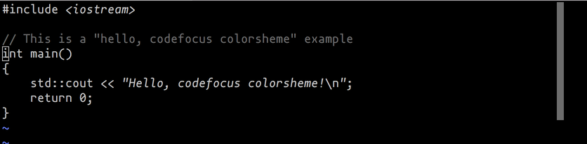

codefocus colorsheme for vim
Posted on January 25, 2018
codefocus is a colorscheme that let you focus on the code, not on the syntax highlightning.

codefocus is a colorscheme that let you focus on the code, not on the syntax highlightning.